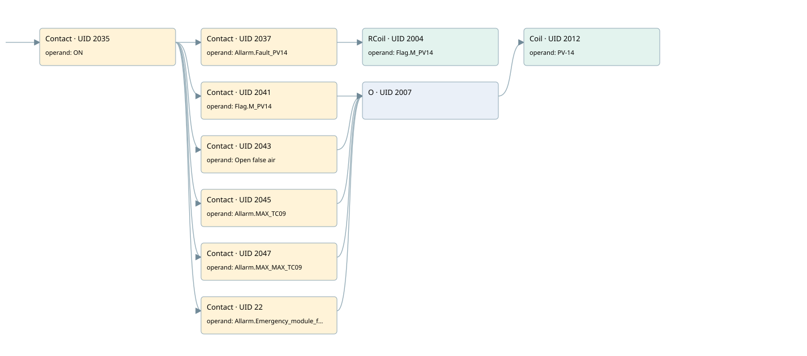

valve air false pv-14
filter · 검색 색인 순서 22 · 원본 내부 NID 추정 21
백업 PLF 원본의 2753212 바이트 위치에서 복원한 XML. 검색 문서 1903의 객체 키 161022004c11000000000000와 연결했다. 이름 해석 9/9개. 남은 RefId는 상수 또는 미해석 참조다.
연결 구조 다시 그리기
원본 Part/PCon/Wire를 이용한 연결도다. TIA 화면의 래더 배치 또는 실행 결과를 재현한 그림은 아니다. 핀 연결은 아래 표와 원본 XML을 기준으로 읽는다. 노드 위에 마우스를 두면 피연산자 이름을 볼 수 있다.

접점·코일·블록과 피연산자
| Part UID | Gate | Negated 핀 | 연결 피연산자 |
|---|---|---|---|
| 2035 | Contact | operand = ON | |
| 2037 | Contact | operand = Allarm.Fault_PV14 | |
| 2004 | RCoil | operand = Flag.M_PV14 | |
| 2041 | Contact | operand = Flag.M_PV14 | |
| 2043 | Contact | operand = Open false air | |
| 2045 | Contact | operand = Allarm.MAX_TC09 | |
| 2047 | Contact | operand = Allarm.MAX_MAX_TC09 | |
| 22 | Contact | operand = Allarm.Emergency_module_fault | |
| 2007 | O | ||
| 2012 | Coil | operand = PV-14 |
접점 경로를 펼친 조건식
Contact·O/A·비교기의 원본 연결을 읽기 쉽게 펼친 보조 해석이다. POWER는 전원 레일 시작을 뜻한다. 호출 블록·에지·타이머의 내부 동작과 다중 쓰기 순서는 이 표로 실행 검증하지 않았다. 미해석 핀과 RefId는 원문 연결표에서 확인한다.
| UID | 동작 | 대상 | 원본 접점 경로 | 내용 |
|---|---|---|---|---|
| 2004 | RCoil | Flag.M_PV14 | (ON AND Allarm.Fault_PV14) | 조건 성립 시 Reset |
| 2012 | Coil | PV-14 | ((ON AND Flag.M_PV14) OR (ON AND Open false air) OR (ON AND Allarm.MAX_TC09) OR (ON AND Allarm.MAX_MAX_TC09) OR (ON AND Allarm.Emergency_module_fault)) | 조건에 따른 Coil 기록 |
원본 배선 연결
| Wire UID | 동일 Wire 연결 끝점 |
|---|---|
| 2049 | Powerrail {} ↔ Part 2035.in |
| 2022 | ORef 2013 (ON) ↔ Part 2035.operand |
| 2036 | Part 2035.out ↔ Part 2037.in ↔ Part 2041.in ↔ Part 2043.in ↔ Part 2045.in ↔ Part 2047.in ↔ Part 22.in |
| 2023 | ORef 2014 (Allarm.Fault_PV14) ↔ Part 2037.operand |
| 25 | Part 2037.out ↔ Part 2004.in |
| 2026 | ORef 2016 (Flag.M_PV14) ↔ Part 2004.operand |
| 2027 | ORef 2017 (Flag.M_PV14) ↔ Part 2041.operand |
| 2042 | Part 2041.out ↔ Part 2007.in1 |
| 2028 | ORef 2018 (Open false air) ↔ Part 2043.operand |
| 2044 | Part 2043.out ↔ Part 2007.in2 |
| 2029 | ORef 2019 (Allarm.MAX_TC09) ↔ Part 2045.operand |
| 2046 | Part 2045.out ↔ Part 2007.in3 |
| 2030 | ORef 2020 (Allarm.MAX_MAX_TC09) ↔ Part 2047.operand |
| 2048 | Part 2047.out ↔ Part 2007.in4 |
| 21 | ORef 23 (Allarm.Emergency_module_fault) ↔ Part 22.operand |
| 24 | Part 22.out ↔ Part 2007.in5 |
| 2031 | Part 2007.out ↔ Part 2012.in |
| 2033 | ORef 2021 (PV-14) ↔ Part 2012.operand |
식별자 해석 근거 9개
| ORef UID | RefId | 이름 | IdentXmlPart 파일 | 해석 방법 |
|---|---|---|---|---|
| 2013 | 52 | ON | 0594-IdentXmlPart.xml | UID/RID + search-text + NID agreement |
| 2014 | 275 | Allarm.Fault_PV14 | 0596-IdentXmlPart.xml | UID/RID + search-text + NID agreement |
| 2016 | 277 | Flag.M_PV14 | 0596-IdentXmlPart.xml | UID/RID + search-text + NID agreement |
| 2017 | 277 | Flag.M_PV14 | 0596-IdentXmlPart.xml | UID/RID + search-text + NID agreement |
| 2018 | 278 | Open false air | 0594-IdentXmlPart.xml | UID/RID + search-text + NID agreement |
| 2019 | 279 | Allarm.MAX_TC09 | 0596-IdentXmlPart.xml | UID/RID + search-text + NID agreement |
| 2020 | 280 | Allarm.MAX_MAX_TC09 | 0596-IdentXmlPart.xml | UID/RID + search-text + NID agreement |
| 23 | 312 | Allarm.Emergency_module_fault | 0596-IdentXmlPart.xml | UID/RID + search-text + NID agreement |
| 2021 | 268 | PV-14 | 0594-IdentXmlPart.xml | UID/RID + search-text + NID agreement |
검색 코드 보조 자료
참조 명칭을 찾기 위한 자료이며 실행 순서나 AND/OR 관계는 위 연결표로 확인한다.
"on" "allarm".fault_pv14 "flag".m_pv14 "flag".m_pv14 "pv-14" "open false air" "allarm".max_tc09 "allarm".max_max_tc09 "allarm".emergency_module_fault